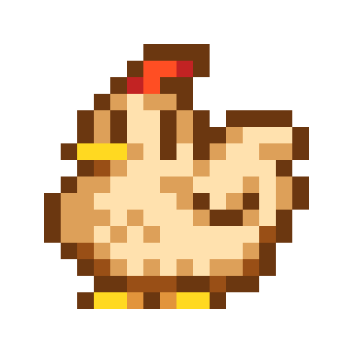
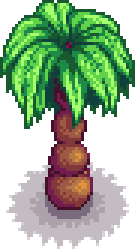

Overview
 Stardew Valley is an open-ended RPG set in the countryside. The plot is that you've inherited your grandfather's old farm plot in Stardew Valley and your goal is to turn the overngrown field into a thriving home.The game is developed by Eric Barone, "ConcernedApe". Stardew valley originally began as a fan made alternative to the Harvest Moon Series. The game initially released for Microdoft Windows in Febuary 2016. Eric then worked with publisher "Chucklefish Games' to release and promote the game on a larger scale.